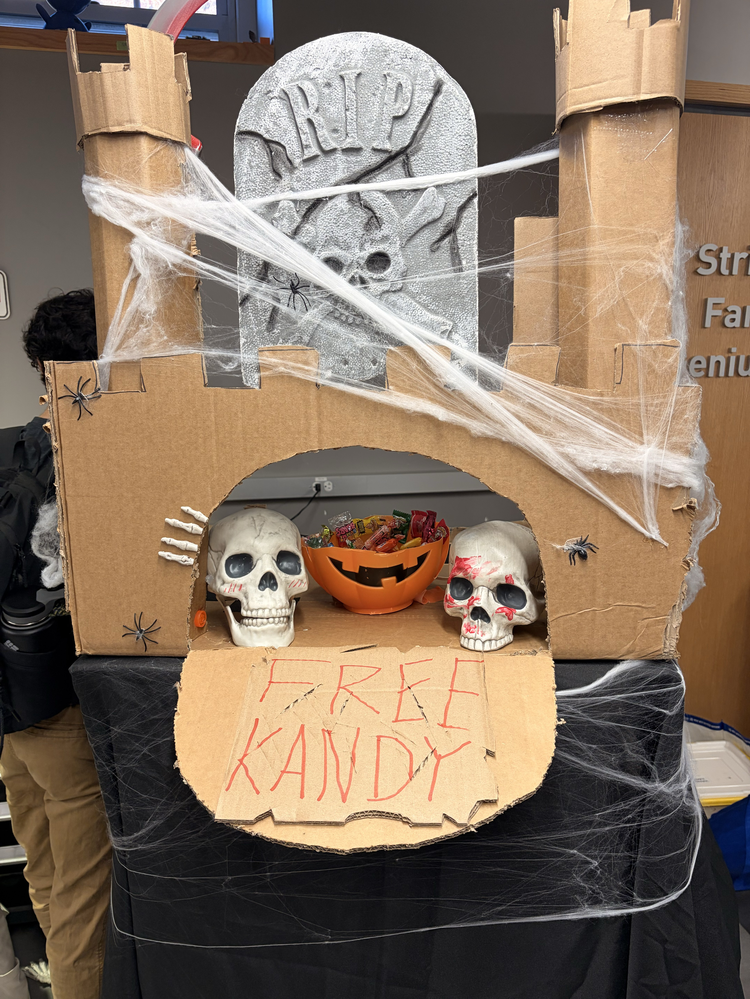
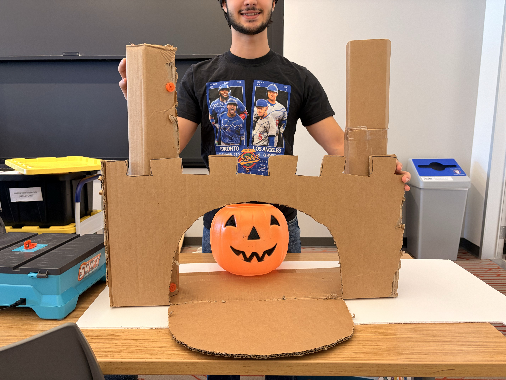
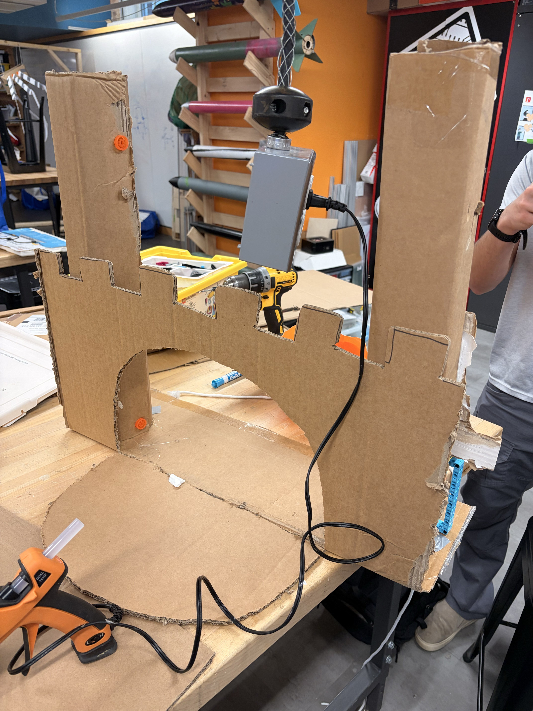
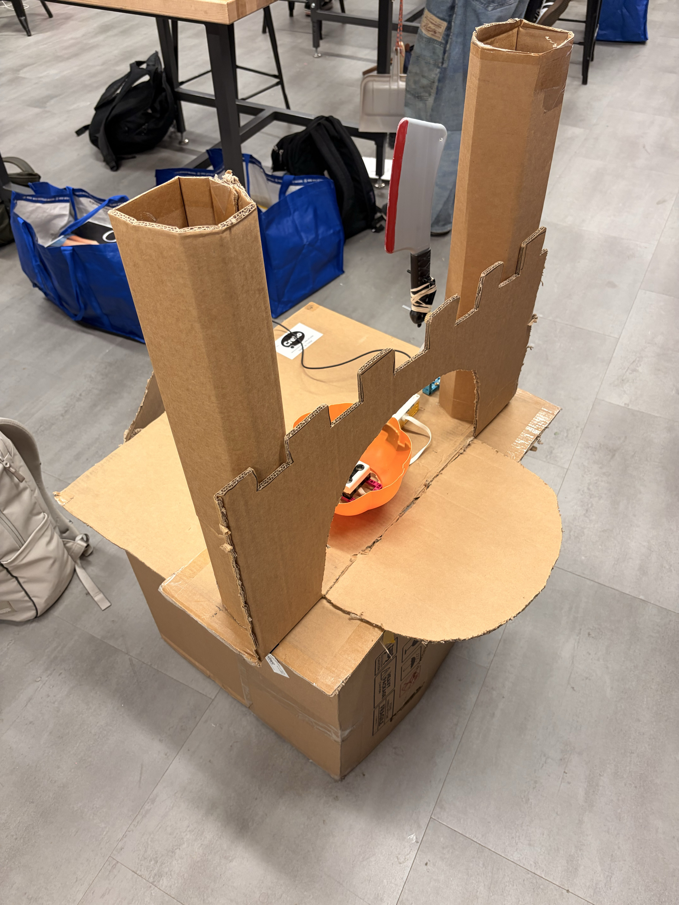
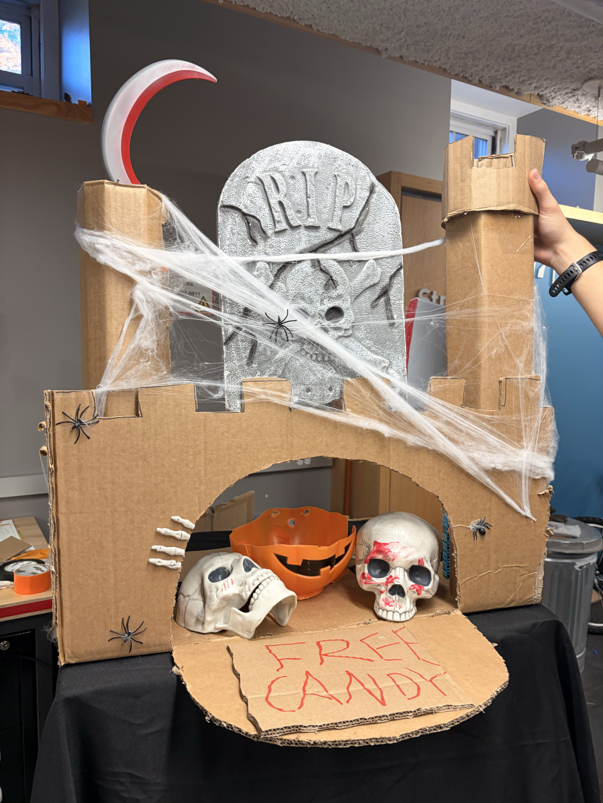
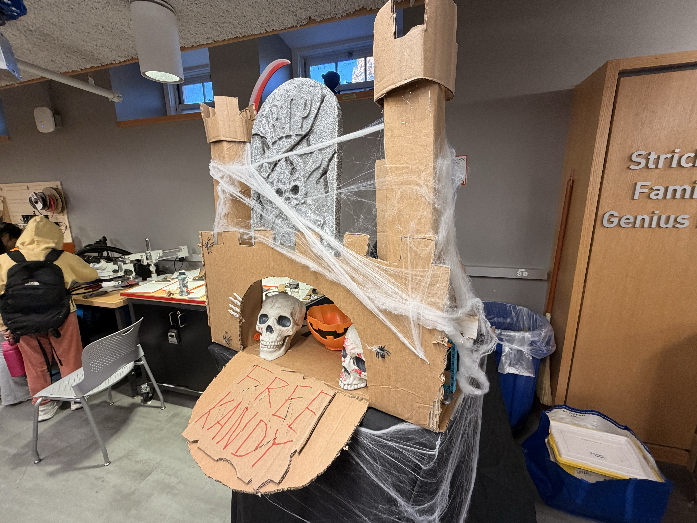
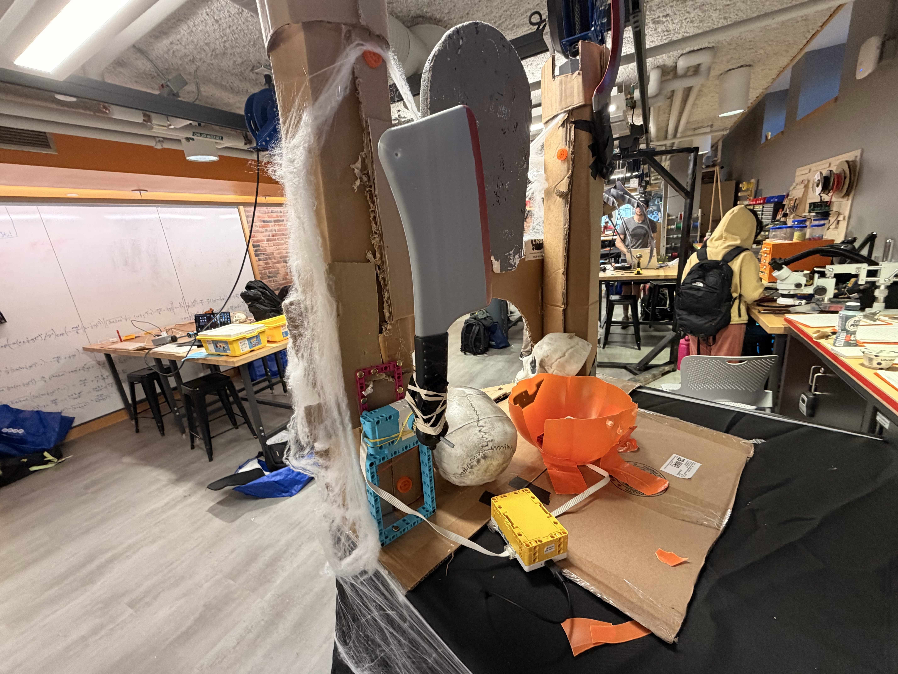

In this project, we built a haunted house with LEGO Spike Prime. Its main feature is a guillotine that slashes down when the motion sensor detects something. We also added a sound that plays when the Spike Prime is activated.
We did a lot of cardboard design to build the structure around the sensor and the Spike Prime. Through this project, we developed crucial skills in combining Spike Prime with external tools.





